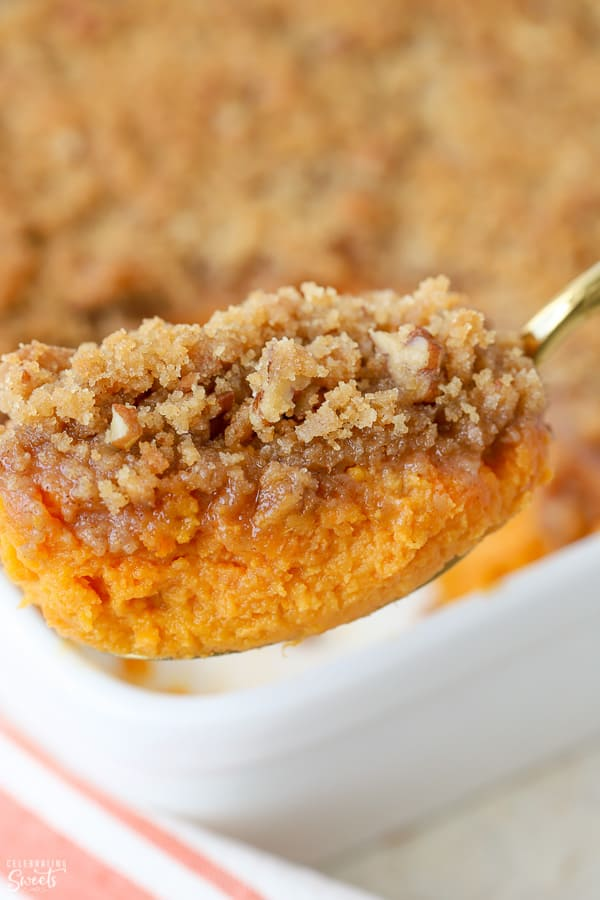

Sweet Potato Cassarole

Your new favorite Thanksgiving cassarole!
This baked sweet potato casserole topped with a delicious pecan topping is so good and
creamy — my family begs me to make it every Thanksgiving and Christmas! Try this recipe
and I'm sure it will become your new tradition.
Ingredients
Sweet Potato Mixture:
- 4lbs sweet potatoes, peeled and cubed
- 1/2 cup packed brown sugar
- 2 Tbsp granulated sugar
- 1/4 cup half and half
- 1/2 cup unsalted butter, melted
- 1 tsp salt
- 1 1/2 tsp ground cinnamon
- 1/4 tsp ground nutmeg
- 1/4 tsp ground cloves
- 2 large eggs
Pecan Crumble Topping:
- 1 cup chopped pecans
- 1 tsp vanilla extract
- 1/3 cup all purpose flour
- 2/3 cup packed brown sugar
- 6 Tbsp cold butter, cubed
- 1/2 tsp ground cinnamon
- 1/2 tsp ground nutmeg
- 1/2 tsp ground cloves